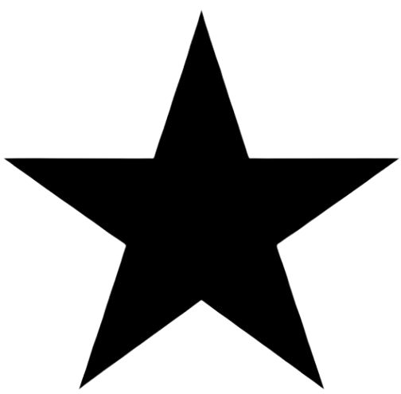
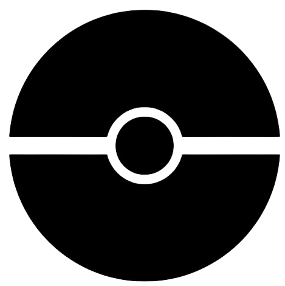

Presentation
Hello and welcome to my website!
After discovering the world of video games, I completed a DUT in Marketing Techniques in Amiens, with the goal of working in this field, specifically in marketing, as I had no skills in computer science.
After two years of study, I realized that business was not my true path, and after helping friends code a small video game during the summer, I found myself drawn into the exciting world of computer science.
And here I am, in my first second of a Bachelor's Degree in Computer Science (BUT Informatique) in Bordeaux!
And in the longer term, I would like to work in the video game or astronomy industry!
By exploring my website, you will find some of the projects I have worked on, and feel free to contact me to talk about exciting projects!!
Passions
-
Astronomy
Astronomy is a subject that interests me a lot, even though I don't know a lot about it. Working in this field was one of my childhood dreams (a big fan of Doctor Who).
 -
Video games
I have been passionate about video games for several years now. I often play after school, mainly League of Legends (level 600+). It is actually this interest that led me to pursue computer science.
-
Pokemon
Since I was little, I have been collecting Pokémon cards and watching the anime. It’s an interest that still follows me today because I continue to collect the cards.

Studies

-
BUT Informatique
Institut universitaire de technologie, Bordeaux
1st year 2025/2028
-
BUT Informatique
Institut universitaire de technologie, Lannion
1st year 2024/2025
-
BUT Technique de commercialisation
Institut universitaire de technologie, Amiens
Brand Strategy and Event Management Track - 2022/2024
-
BAC Général
Lycée des Graves, Gradignan
Specialization in Life Sciences and Earth (SVT) and Chemistry-Physics, with Honors - 2021/2022
Experiences
Student job: Student representative at CROUS
October 2024 to June 2025, Lannion
During my first year of the Bachelor's degree in Computer Science, I had a part-time job alongside my studies. My main tasks were to organize and supervise events within the CROUS establishment, especially handling communication and interacting with students.
Skills developed:
- Event organization
- Public speaking
Summer job: cleaning staff
June to August 2024, Bordeaux
July to August 2025, Bordeaux
In the summer of 2024, I worked cleaning trains. We were in a team and had to complete a specific task within a limited time.
Skills developed:
- Stress management
- Teamwork
Second-year internship for DUT TC: Marketing Assistant at Definima
April to May 2024, Gradignan
For my second-year internship in DUT TC, I had the opportunity to work at the web agency Definima in Gradignan. During this internship as a marketing assistant, I discovered the world of SEO and SEA, using a variety of analysis tools. I also created articles for client websites as well as for the company’s own site.
Skills developed:
- Analysis
- Teamwork
- Autonomy
First-year internship for DUT TC: Sales Advisor at Gamecash
May 2023, Amiens
I completed my first-year internship for DUT TC at Game Cash, a franchise specializing in buying and selling video games and accessories. I was fortunate to work with this team for one month, during which I developed several skills.
Skills developed:
- Teamwork
- Sales
- Sales floor organization
- Customer relationship management
- Public speaking
Volunteer at the FSA Association
2015 to 2018
During most of my middle school years, I participated in the association’s activities by organizing and distributing hygiene products, mainly for women but especially for people in need. I also helped organize, set up, and run a hygiene product collection event within my school.
Skills developed:
- Team spirit and team management
- Project organization and implementation
Langages
C
Proficient
Python
Proficient
Sql
Proficient
HTML
Proficient
CSS
Proficient
PHP
Entry-level
Java
Proficient
Java fx
Entry-level

Projects
Snake in a Terminal
Skill developed: Developing a software application
Automatic Snake
Skill developed: Optimization
File Management
Skill developed: IT System Administration
Football League
Skill developed: Data Management
Website for the Olympics
Skill developed: Project Management
LEGO Company Analysis
Skill developed: Teamwork